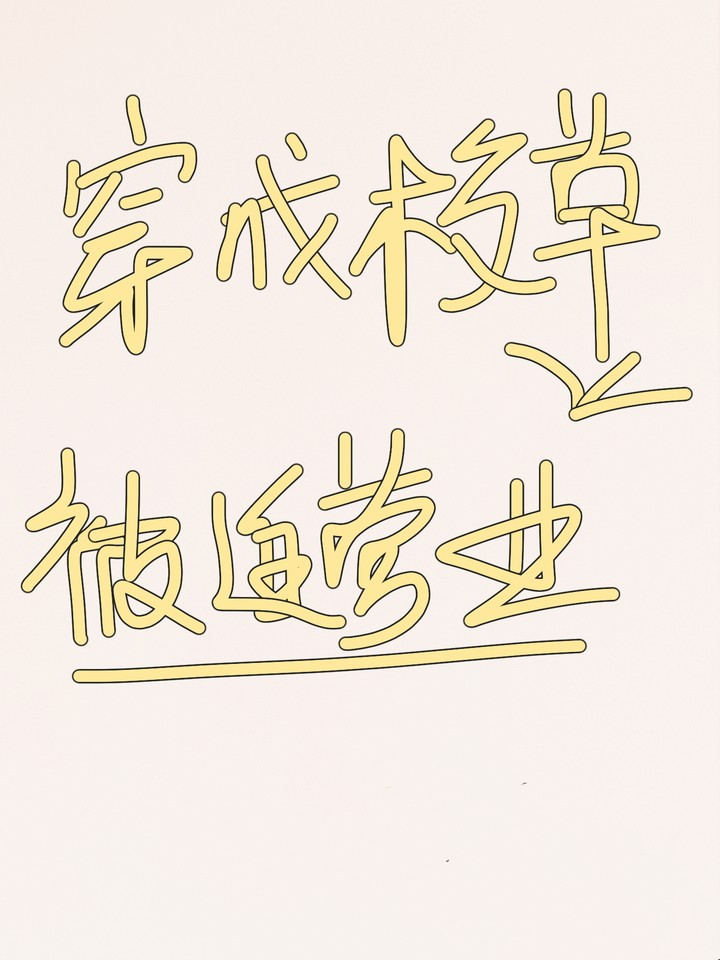

Yu Bai Zhou transmigró a un libro.
El talentoso protagonista era el mejor estudiante de la escuela. Debido a su excelencia en cada materia, muchas personas estaban insatisfechas con él, por lo que idearon diversos esquemas para meterse con él, al grado que dejaron una sombra oscura en sus años de secundaria.
Sin embargo, los villanos no sabían que el aparentemente pobre protagonista era en realidad el hijo mayor del hombre más rico de la Ciudad A.
Y en seis años, el protagonista sustituiría la posición de su padre como el nuevo hombre más rico de la Ciudad A por sus propias capacidades. ¡Diez años después, se convertiría en el hombre más joven y rico del país! Cuando eso suceda, ¡los villanos serían torturados hasta la muerte por el protagonista!
… Quiso la mala suerte, Yu Bai Zhou transmigró al villano que más intimidaba al protagonista.
Para poder vivir unos años más, Yu Bai Zhou, el villano, comienza a formular un plan de corrección de carácter.
Sin embargo, justo cuando lucha por salvar su imagen ante los ojos del protagonista, de la nada, el protagonista lo empuja ansiosamente contra la pared y lo atrapa dentro del círculo de sus brazos. Esos refinados ojos marrones lo miran atentamente. "Yu Bai Zhou, si vuelves a causar problemas, te besaré".
Yu Bai Zhou, que acaba de ser kabedon, entra en pánico. "¿Alguien puede decirme exactamente dónde me equivoqué?"